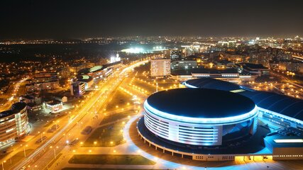

СТОЛИЦА
Минск
Исторический экскурс, интересные факты
Минск - один из старейших городов Европы. Первое письменное упоминание о будущей столице Республики Беларусь датируется 1067 годом. В то время объединившиеся внуки Рогнеды, сыновья Ярослава Мудрого - киевские князья Изяслав, Святослав и Всеволод Ярославичи - с войском явились под город Менеск в отместку за поход полоцкого князя Всеслава Брячиславича на Псков в 1065 году. Они овладели городом-крепостью Менеском и разбили войска Всеслава в памятной битве на Немиге, описанной в "Слове о полку Игореве".
Спустя тысячелетие городу было суждено стать одним из самых известных миротворческих центров планеты XXI века. И будучи не раз разоренным дотла и возрождаясь, Минск как никакой другой город знает цену миру и спокойствию. Именно он - единственный в Беларуси город, который был удостоен в 1974 году звания "Город-герой" в ознаменование заслуг его жителей в борьбе с фашизмом в годы Великой Отечественной войны.
В столице расположены важнейшие объекты и учреждения страны: Дворец Независимости - государственная резиденция Президента Республики Беларусь, Администрация Президента Республики Беларусь, Национальное собрание и Совет Министров, Национальный банк Беларуси.
В Минске находятся Исполнительный комитет Содружества Независимых Государств, располагается дипломатический корпус, консульства, представительства международных организаций в Республике Беларусь.
Здесь размещаются Национальная академия наук Беларуси (дата основания - 1 января 1929 года), Парк высоких технологий, крупнейшие учебные заведения страны. Также это единственный город Беларуси, имеющий с 1984 года метрополитен.
Ежегодно во вторую субботу сентября Минск празднует день города.
Географическое положение
Крупнейший город страны располагается на юго-восточных склонах Минской возвышенности. Площадь столицы Беларуси - 353,6 кв.км.
Географические координаты Минска: широта - 53°53′59″, долгота - 27°34′00″.
Высота над уровнем моря - 222 м.
Рельеф Минска разнообразен: характеризуется значительной холмистостью, перепад отметок в черте города составляет около 100 м.
Белорусскую столицу можно назвать не только административным, экономическим, научным и культурным, но и территориальным центром страны - всего в 70 км от нее находится географический центр Беларуси.
Административно-территориальное деление
Минск делится на 9 районов: Центральный, Советский, Первомайский, Партизанский, Заводской, Ленинский, Октябрьский, Московский и Фрунзенский.
Население
В Минске на 1 января 2022 года проживало 1 996 553 человека - 21,6% от общей численности населения страны.
Экономическое развитие
Минск - крупный промышленный центр. Он занимает лидирующие позиции в формировании валового внутреннего продукта, обеспечивая почти треть общереспубликанского объема. Основу промышленного комплекса столицы Беларуси формируют предприятия, осуществляющие производство машин и оборудования, продуктов питания, напитков и табачных изделий, электрооборудования, транспортных средств, строительных материалов, фармацевтических препаратов.
В Минске более 4300 организаций промышленности. Именно в столице находятся известнейшие белорусские бренды: ОАО "Минский тракторный завод", ОАО "Минский автомобильный завод - управляющая компания холдинга "БЕЛАВТОМАЗ", ОАО "Минский завод колесных тягачей", ОАО "Управляющая компания холдинга "Минский моторный завод", три станкостроительных завода, ОАО "Амкодор - управляющая компания холдинга", ОАО "Управляющая компания холдинга "Белкоммунмаш", ОАО "Интеграл" - управляющая компания холдинга "Интеграл", ЗАО "Атлант", СОАО "Коммунарка", ОАО "Керамин" и многие другие.
Организации Минска осуществляют внешнюю торговлю товарами со 184 странами мира.
В общей сложности на Минск приходится около 34% внешнеторгового оборота товарами Беларуси. Иностранные инвестиции поступают в белорусскую столицу из более чем 80 стран.
Весомую роль играет свободная экономическая зона "Минск", объекты которой также размещены в Минской области.
ИНТЕРНЕТ-РЕСУРСЫ